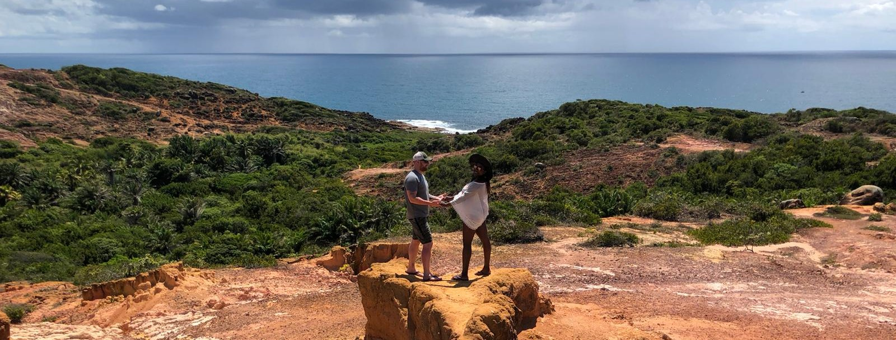

About Me
Intro
Hi, I'm Christopher (but you can call me Chris for short). I've been teaching myself coding since I was around 11 and have tweaked my skills throughout the years. HTML5, CSS3, and SASS are the languages I'm fluent in. I am FINALLY attending school to go for my Bachelors Degree and hopefully take my career in Web Development to new heights. Currently, I attend Montgomery County Community College for my Associates Degree in web development with a concentration in mobile application software development. I love to code and am always learning something new!
My Development Style
My style of development is creating fluid and responsive websites with a modern but minimalistic look. Aestetics and functionality are the keys to making content easily conveyed to the user. Whatever the message, it's my job as a developer to make sure it gets delivered in a beautiful and thoughtful way no matter what device is being used.
Other Experience
Besides my coding experience, I have 10+ years of experience in a professional office setting working with various types of technologies. Anything from Microsoft Access to Wordpress, from ticketing management systems to asset management systems, from android tablets to the MDM systems to manage and control those tablets...I've dabbled in a lot.
I am a very customer centric and have many years of customer service experience which is very beneficial when working on web development projects. I tend to stay focused on the needs and wants of, not only the person I am developing for, but also the user (the customer of my customer, if you will). Whatever project I am working on, I will stay engaged with the "customer" every step of the way.
Personal Life
I hail from Philadelphia, PA (go Eagles!). I'm 29 years young and married to a beautiful woman, Aline. No kids yet, but probably in the near future! We love to travel outside of the US to experience new places and cultures. My wife is from Brazil, so we get to go there once a year to see her family and visit different places within the country. I am also slowly, but surely, learning to speak Portuguese!
On my free-time I love working out, hiking, biking, camping, and basically anything that has to do with the outdoors and nature. I'm a huge anime nerd (hunterxhunter and Fairy Tale are my favorites). I'm a music lover, coffee lover, and book lover (non-fiction only). I love dogs and had 3 of them growing up as a kid and I have been on a mission to convince my wife to get one since we got together. Favorite color? Green. Favorite food? Tacos. Wanna know anything else? Contact me!